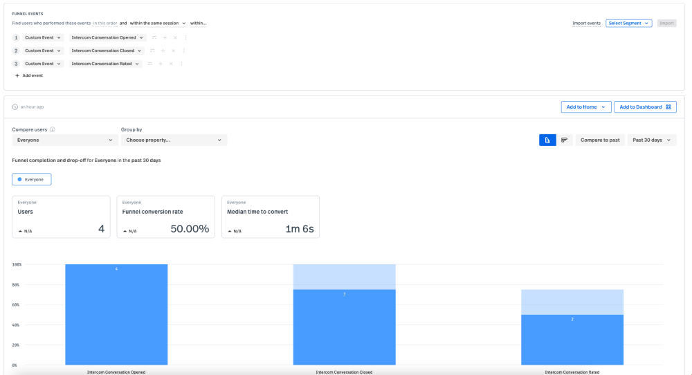

What is this?
This is a demonstration of how FullStory sessions can be linked to customer support events
via Intercom's webhook API and
FullStory's server events API.
Scenario
- A customer reaches out to a support agent via the Intercom chat widget.
- Once the customer's issue has been resolved, the support agent closes out the conversation.
- Depending on how much back and forth there is between the customer and support agent, the customer may see a rating widget in the chat.
- Web hook events are triggered from Intercom both when the chat is closed by the agent and when the customer rates the conversation.
- An AWS Lambda function + API gateway endpoint is subscribed to these two web hook events in Intercom.
- The AWS Lambda function creates custom events via the FullStory API that links the chat events with the session replay where the chat occurred.
Using Intercom Conversation Data in FullStory
Capturing Intercom conversation events
Once everything is configured, the following events can be sent to FullStory using this demo app:
- Intercom Conversation Opened
- Intercom Conversation Closed
- Intercom Conversation Rated
You'll need to play the part of both the customer and the Customer Support agent.
You'll receive messages from yourself in your
Intercom Inbox.
When you open the chat widget (playing the part of the user) a Intercom Conversation Opened event is attached to the session.
When you close the conversation (playing the part of the agent) a Intercom Conversation Closed event is attached to the session.
If a follow-up rating request is sent to the user via chat, a Intercom Conversation Rated event is attached to the session once the user rates the conversation.
Head's up that the rating request is only triggered under certain conditions. Those conditions can be found
here.
Anaylizing Intercom conversation data
Funnels

Funnels can track drop off in customer service conversations
Segments
Alerts
Alerts can be configured to fire based off of the rate that users are providing negative survey feedback
Demo Setup
Prerequisites
There are a few things you'll need to do before running this example yourself:
FullStory Configuration
The browser and server APIs used for this demo are pre-realease APIs, currently deployed to FullStory's staging environment. At this point in time, only FullStorians can access these APIs.
- Use the v2 snippet to get access the pre-release v2beta browser API.
- An example of the v2 snippet, as well as a placeholder for your staging
window['_fs_org'] value can be found in the <head> of this homepage.
AWS Configuration
- Once you've run the
cdk bootstrap command to get the AWS CDK setup for use on your workstation, run npm i in the middleware directory.
- To deploy the AWS Lambda function + API Gateway that will be used to receive Intercom webhooks, run
npm run deploy in the middleware directory.
- Take note of the "Outputs" section in the terminal once the deploy command has finished running. This will used for your web hook configruation in Intercom:
✨ Deployment time: 1.61s
Outputs:
IntercomLambdaMiddlewareStack.{long resource id omitted} = https://{the API URL generated for you}/prod/
Intercom Configuration
Intercom Messenger (browser chat widget)
- Go through the motions of installing the Intercom JavaScript code per this article.
- You'll see an
app_id value that you can put into the placeholder found in the <head> of this homepage.
Web hook subscriptions
-
Supscribe to two topics using the web hook URL created during AWS Configuration:
- conversation.admin.closed
- conversation.rating.added
- Make sure to add "intercom" to the URL path when configuring your web hook endpoint URL:
https://{the API URL generated for you}/prod/intercom
- Details about configuring web hooks and subscribing to topics can be found here.